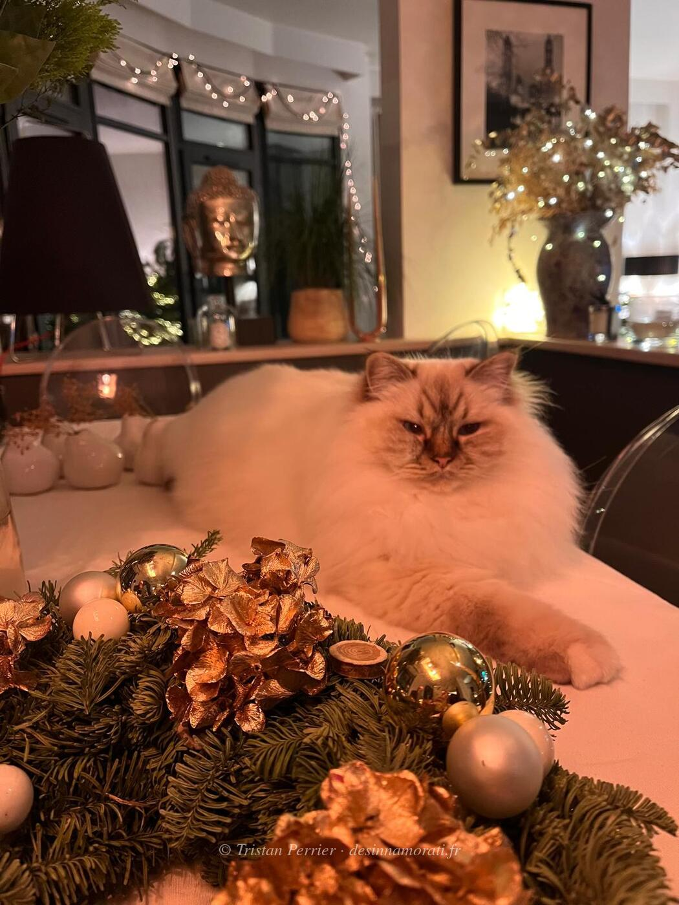

RobeMâle · Chocolat tabby point
Frères et sœursRangoon des Innamorati, Raspoutine des Innamorati, Romy des Innamorati
StatutAdopté
Album9 photos, de août 2020 à décembre 2024


Photos réduites et marquées. Elles appartiennent à la Chatterie des Innamorati et ne peuvent pas être reprises dans une annonce.